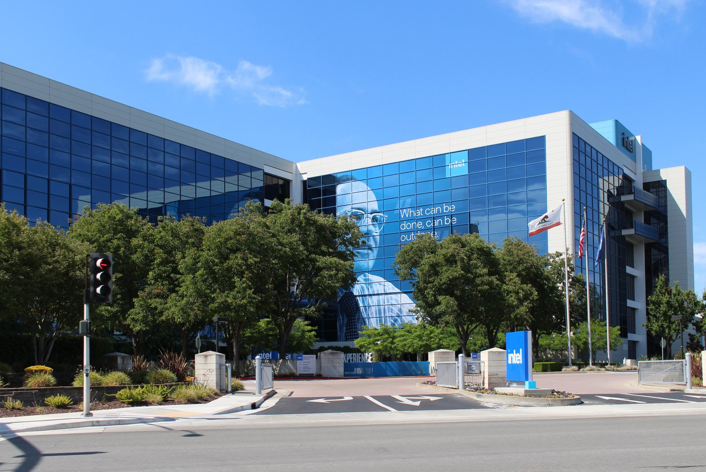

Wall Street chiude venerdì 16 ottobre 2026 con un'altra seduta in rosso per il comparto tecnologico: il Nasdaq cede il 2,1% a 26.140 punti, segnando la peggior settimana dal giugno 2026. L'S&P 500 perde l'1,1% a 7.659 punti, mentre il Dow Jones contiene le perdite a −0,3% a 52.002 punti. In sei sedute consecutive, i titoli chip e intelligenza artificiale hanno bruciato complessivamente 1.640 miliardi di dollari di capitalizzazione.
I dati di chiusura — venerdì 16 ottobre 2026
| Indice | Valore | Variazione giornaliera |
|---|---|---|
| S&P 500 | 7.659 | −1,1% (−84,62 pt) |
| Dow Jones | 52.002 | −0,3% (−175 pt) |
| Nasdaq Composite | 26.140 | −2,1% (−572 pt) |
Il chip selloff accelera: i titoli più colpiti
Il protagonista negativo della giornata è ancora il comparto semiconduttori. Intel perde il 5,8%, colpita da preoccupazioni strutturali sulla propria roadmap tecnologica e dal rallentamento della domanda PC. Micron Technology cede il 5,6%, mentre AMD scende del 5,95%. Anche Nvidia, fino a pochi giorni fa il titolo più resistente della categoria, registra un calo dell'1,5%.
| Titolo | Settore | Variazione giornaliera |
|---|---|---|
| Intel (INTC) | Semiconduttori | −5,8% |
| Micron (MU) | Memoria / HBM | −5,6% |
| AMD | Chip GPU/CPU | −5,95% |
| Nvidia (NVDA) | GPU AI | −1,5% |
| CoreWeave (CRWV) | Hyperscaler AI | −12% |
CoreWeave: l'hyperscaler in crisi di liquidità
Il caso più estremo della giornata è CoreWeave, la piattaforma cloud specializzata in GPU per l'AI. Le azioni cedono quasi il 12% in una sola seduta, mentre le obbligazioni non garantite con scadenza 2032 — emesse con un coupon del 9,625% — vengono ora scambiate a rendimenti superiori al 16%, un segnale di forte stress creditizio. I Credit Default Swap (CDS, strumenti di assicurazione sul rischio di credito) superano i 1.000 punti base, livello che il mercato associa a un rischio di insolvenza significativo.
Il problema di CoreWeave è strutturale: l'azienda ha preso in prestito decine di miliardi per acquistare GPU Nvidia e costruire data center, scommettendo che la domanda AI avrebbe coperto i costi del debito. Con i tassi di interesse ancora elevati e la narrativa sull'AI sotto pressione, quella scommessa appare sempre più rischiosa.
💡 Impara: Credit Default Swap (CDS) — Assicurazione sul Rischio di Credito
Un Credit Default Swap (CDS — assicurazione sul rischio di credito) è un contratto finanziario che funziona come una polizza assicurativa contro il fallimento di un'azienda: il compratore paga un premio periodico, il venditore si impegna a risarcire in caso di default (insolvenza). I CDS si misurano in punti base: 1.000 bps significa che assicurarsi da un potenziale fallimento costa l'1% del capitale protetto ogni anno. Più alto è il valore, più alto è il rischio percepito. Quando i CDS di CoreWeave superano i 1.000 bps, il mercato dei derivati sta dicendo che il rischio di insolvenza è elevato — un segnale che spinge gli investitori in azionario a vendere anche i titoli correlati.
Perché cadono i chip: inflazione + dubbi sul Capex AI a debito
Due catalizzatori hanno innescato e prolungato questa sequenza di vendite. Il primo è il dato sull'inflazione USA di settembre 2026, uscito sopra le attese: con i prezzi ancora resistenti, la Federal Reserve ha meno spazio per tagliare i tassi, rendendo più caro il costo del debito per tutte le aziende che hanno finanziato la crescita a leva — e il settore AI ne è pieno.
Il secondo catalizzatore è il cambiamento nella narrativa degli hyperscaler: Microsoft, Google, Amazon e Meta hanno investito centinaia di miliardi in Capex AI (spese in infrastrutture per l'intelligenza artificiale) nel 2025-2026. Gli analisti iniziano a interrogarsi su quando e come questi investimenti si tradurranno in ricavi reali. Se il ritorno sull'investimento arriva in ritardo, la domanda di chip potrebbe rallentare.
💡 Impara: Chip Cycle (Ciclo dei Semiconduttori)
Il settore dei semiconduttori ha un ciclo storico ben documentato: periodi di forte domanda (upturn) si alternano a periodi di eccesso di inventari e calo degli ordini (downturn). Il ciclo dura tipicamente 3-4 anni. Durante l'upturn, i produttori aumentano la capacità produttiva; poi gli ordini calano, i magazzini si riempiono e i prezzi scendono. L'AI ha distorto questo schema tradizionale: la domanda di chip per data center (GPU, HBM, processori AI) è rimasta eccezionalmente forte per due anni consecutivi. Ma ora il mercato si chiede se non si stia formando un nuovo tipo di bolla: non di inventari fisici, ma di aspettative sui rendimenti. Un rallentamento degli investimenti AI (Capex AI) può innescare un downturn accelerato del chip cycle.
L'unica nota positiva: Dow e petrolio
In mezzo al rosso tech, il Dow Jones Industrial Average tiene meglio degli altri indici, cedendo solo lo 0,3%. L'indice è più esposto a settori come difesa, utilities e industriali — meno sensibili alle preoccupazioni sul Capex AI. Il petrolio resta su livelli storicamente elevati: il Brent è a 109,86 dollari al barile (+3,72%) e il WTI a 101,41 dollari (+3,51%) — dati che sostengono i titoli energetici e contribuiscono a tenere l'inflazione alta.
Verso il terzo trimestre degli earnings
La settimana del 19 ottobre inaugurerà ufficialmente la Earnings Season (stagione delle trimestrali) del terzo trimestre 2026, con i risultati di diverse grandi banche e poi le trimestrali dei mega-cap tecnologici. Gli investitori cercheranno nei numeri la risposta alla domanda cruciale: i colossi tech stanno davvero tagliando il Capex AI, o stanno solo rallentando la crescita? La risposta definirà la direzione del Nasdaq per il resto del 2026.